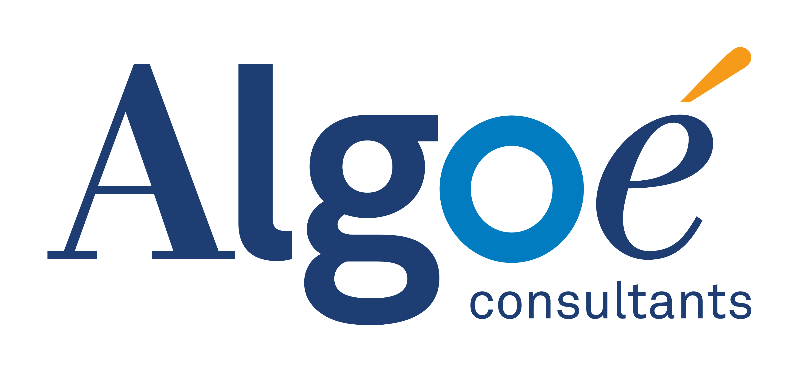

Après 7 années en tant qu'ingénieur dans le domaine du bâtiment sur des postes complets tels que manager d'équipe et chef de projet, j'ai décidé de prendre le virage du numérique et d'apprendre à coder. Je suis aujourd'hui en mesure d'occuper le poste de Product Owner et je souhaite m'engager dans une entreprise qui partage mes valeurs et saura me faire confiance pour l'aider à grandir.
|
Ruby on Rails – PostgreSQL - Rspec Front-end : HTML – CSS – Javascript Management de Projet Outils : Heroku – AWS – Github |
Product Thinking - UX Design - Product Design - UI Figma - Mockup - wireframe Management de Projet Français - Anglais (C2) - Espagnol (C1) |
Teacher Assistant @LeWagon (en cours)En appuie des professeurs permanents durant la formation de développeur web au wagon. Enseignement intensif sur 9 semaines qui vise à former les élèves à définir, concevoir et développer un produit web en utilisant le back-end (ruby, ruby on Rails, SQL, PostgreSQL) et le frontend (HTML, CSS, Javascript). |
|
|  |
Consultant en Management de Projets Immobiliers @Algoé (2017 - 2018)Assistance à maîtrise d’ouvrage en phase conception ou travaux pour des ERP et bâtiments tertiaires (de 20 millions à 2 milliards d’euros) Chef de projet en analyse et pilotage de dossiers promoteurs dans le cadre d’un projet global d’acquisition de Foncière Logement (résidentiel) Gestion du patrimoine immobilier pour des structures publiques (Réalisation de SDI pour Université Lyon 2, Agence de l’Eau Rhône Méditerranée Corse). |
Responsable du Pôle Batiments @DDT 78 (2011 - 2015)Encadrement de 13 agents chargés de la mise en application de missions « bâtiments » sur le patrimoine immobilier de l’Etat. Suivi et conseil en matière de politique immobilière de l’État en partenariat avec le niveau régional. |
|
Le Wagon : Coding Bootcamp (formation intensive de 400 heures) ENTPE : Ecole d'ingénieurs des Travaux Publics de l'Etat Classe Préparatoire aux Grandes Ecoles : PSI |
Projet Web Personnel : Terra Cognita
Tour du monde : volontariat et expériences humaines (2016)
Rugby : comme tout clermontois c'est une religion
Outdoor : Course à pied / Trail / Randonnée / FreeSki